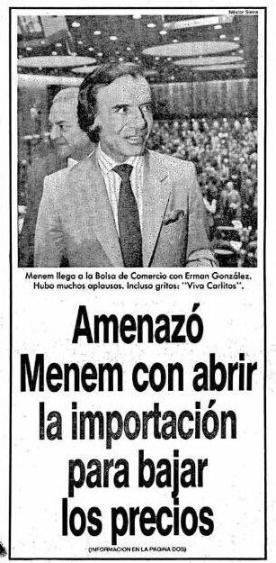
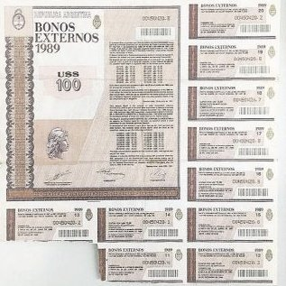

Capacidad de reelección
Durante su mandato, en el 94, Menem logro un acuerdo yfue sancionada la Reforma Constitucional que, entre otrascosas, permitió la reelección y un periodo de mandato de4 años así logrando el un mandato de un total de 10 años.

El 1 de marzo de 1991 Domingo Cavallo se convierte en ministro de economía, y consiguió que el congreso vote una ley que estableció el valor de: peso = dolar.
Durante su mandato, en el 94, Menem logro un acuerdo yfue sancionada la Reforma Constitucional que, entre otrascosas, permitió la reelección y un periodo de mandato de4 años así logrando el un mandato de un total de 10 años.
Contrario a lo que hizo Peron, Menem abrió el mercado alas importaciones golpeando fuertemente a las pymes, sus trabajadores y toda la industria nacional.

El plan Bonex fue una medida economica que consistio en congelar los activos de los ahorristas a plazo fijo y cambiarlos por bonos del estado.
